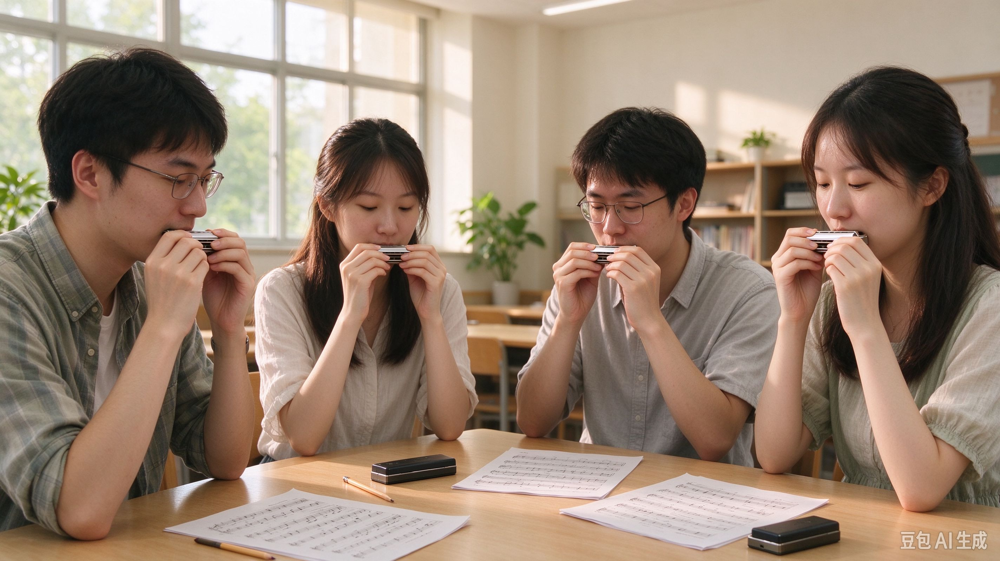

社团简介
听风口琴社是一份围绕校园音乐生活设计的招新示例。我们希望把口琴放回日常：课后的一段空闲、周末的一次合奏、朋友之间的一首短曲，都可以成为开始学习的理由。这里欢迎第一次接触乐器的同学，也欢迎已经能够吹奏旋律、想寻找合奏伙伴的同学。报名之前不需要拿出考级证书，更不需要用一段高难度演奏证明自己。愿意倾听、愿意练习、能够尊重伙伴的节奏，就是共同学习的基础。网页中的活动与社团设定用于课程展示，不代表某所学校已经成立或正在实际招生的组织。
口琴体积小，携带方便，却有丰富的声音世界。常见的复音口琴、十孔布鲁斯口琴和半音阶口琴，在孔位安排、发声特点与适合练习的内容上各有区别。新成员可以先听几种音色，再根据喜欢的曲风和预算选择，不必因为别人拥有某款乐器就急着购买。初次交流会重点解释口琴的吹吸关系、音域和基本保养，帮助大家理解手里的乐器。不同类型的口琴不一定能直接共用同一套孔位谱，合奏前需要核对调性与谱面，避免仅凭外形判断能否一起演奏。
入门学习从舒服的姿势开始。坐下时让肩膀放松，双脚自然落地，持琴时不要让手腕长时间僵硬。吹奏需要稳定而轻柔的气流，不是越用力越响亮就越好。刚开始可以把练习拆成很短的片段，在呼吸自然的情况下寻找清晰的声音。如果出现头晕、嘴唇不适或明显疲劳，应当暂停，恢复正常呼吸后再决定是否继续。社团里的伙伴可以提供学习经验，但不会把身体不适当成必须忍耐的训练过程，也不会以练习时长比较谁更认真。
单音练习是许多新成员遇到的第一道小难题。相邻孔位同时发声时，声音可能显得混杂；为了追求立刻准确而过度收紧嘴唇，又容易让人疲惫。我们的示例课程会先用几个相邻音进行慢速练习，配合录音和示范比较，逐渐找到合适的位置。每次只观察一个问题，例如今天关注是否漏气，下一次再关注移动是否平稳。练习记录也不必复杂，只要写下练了哪一小节、遇到什么困难、下一次准备如何调整，就能让进步有迹可循。
节奏训练与吹奏技巧同样重要。大家可以先拍手读出节拍，再把一小段旋律放进稳定的速度里。节拍器是帮助理解时间的工具，不是催促所有人加快的倒计时。某个音总是抢拍时，我们会把乐句缩短，甚至暂时放下口琴，用说唱节奏的方法找回重音。能够在慢速下稳定完成，比偶然在快速下吹对一次更有意义。小组练习还会加入数拍进入、观察手势和共同收尾，让成员学会在自己的声音之外听见伙伴的声音。
合奏需要清楚的分工，也需要允许调整。旋律声部负责表达主要乐句，其他成员可以练习简单的长音或节奏型，但安排之前要确认乐器条件与个人能力。遇到一时无法完成的片段，可以先选择休止或更容易的声部，等熟悉后再逐步增加内容。每个人都可以提出疑问，也可以说明自己需要更慢的速度。我们希望排练中的反馈具体而温和，例如指出哪一拍没有对齐，并一起试一次，而不是用天赋好坏给伙伴下结论。
口琴是直接接触口部的个人乐器，因此卫生习惯必须从开始就建立。练习前保持口腔清洁，避免刚吃完食物便立即吹奏；不同成员不共用口琴，也不通过轮流试吹来比较音色。练习后按乐器说明处理水分，通风干燥后收纳，避免长时间处于潮湿环境。不同材质的琴格和簧片可能有不同清洁要求，不能把所有口琴都直接放进水里冲洗。遇到异响时先查说明或寻求可靠维修建议，不随意拆卸自己不熟悉的零件。
校园音乐生活也需要考虑周围的人。示例活动优先安排在允许练习的场所，提前确认使用时间，避免在宿舍休息时段反复吹奏。户外分享要注意天气和现场秩序，控制音量，给通行的人留出空间。记录照片与视频之前应当征得参与者同意，不希望出镜的成员可以选择画面之外的位置。音乐可以带来交流，但尊重他人的生活和表达意愿，才会让这种交流持续下去。
加入听风口琴社的想象，不是从此每天都要参加演出，而是为自己的大学生活保留一块可以慢慢练习的地方。你可以从几个清晰的单音开始，也可以带来一首正在学习的曲子，与伙伴讨论换气和节奏。我们期待的成果可以很小：一次整齐的结束、一段比上周更稳定的旋律、一份愿意分享给新同学的练习笔记。只要过程认真、相处自在，这些细小的变化就值得被听见。
活动安排
| 口琴社 2026 年春季学期活动安排表 | |||
|---|---|---|---|
| 时间 | 活动 | 教室 / 地点 | 活动内容 |
| 第 2 周 · 周三 | 新成员见面会 | 学生活动中心 203 教室 | 认识伙伴、了解口琴种类 |
| 第 3 周 · 周三 | 口琴基础教学公开课 | 持琴姿势、呼吸与单音 | |
| 第 5—8 周 · 周三 | 节奏与合奏工作坊 | 学生活动中心 203 教室 | 分声部练习与伙伴互评 |
| 第 10 周 · 周六 | 校园口琴分享会 | 校园草坪（雨天改室内） | 小组演奏与学习心得分享 |
| 第 14 周 · 周三 | 学期成果交流 | 学生活动中心 203 教室 | 作品回顾与学习计划 |
课程作业中的示例活动计划，日期及场地不代表真实预约。按题目保留 2026 年春季学期。
本页活动表按照作业要求保留“口琴社二〇二六年春季学期活动安排表”的主题，表内时间、场地与课程内容都是课程设计中的示例计划，不表示已经获得教室预约或开展真实招募。安排以一个学期的学习过程为线索，依次经历认识伙伴、建立基本技巧、尝试合奏和回顾成果。具体日期在真实组织活动时还需要结合校历、考试安排和场地许可确认。这里用周次表达节奏，目的是让新成员看清学习如何逐步展开，而不是承诺所有人必须在相同时间达到相同水平。
第二周的新成员见面会计划在学生活动中心二〇三教室进行。到场后可以先用一句话介绍自己喜欢的音乐以及希望学会的内容，不要求当众表演。组织者会展示几种常见口琴的外形和音色特点，说明个人乐器卫生与活动秩序，再让成员按照经验和兴趣组成小组。没有购买口琴的同学可以先观察和提问，不能共用他人的乐器试吹。见面会结束前，每组整理一个想继续了解的问题，作为下一次公开课的讨论起点。
第三周的口琴基础教学公开课继续使用同一间教室，因此表格把两次活动的教室单元格跨行合并。这样的写法既减少重复，也直接说明两次活动的地点相同。公开课先做简短的持琴示范，再讲解自然呼吸、单音寻找和基本节拍。练习安排为示范、个人尝试、小组交流三个阶段，每个阶段之间留出休息。课堂不会要求初学者持续吹奏长时间的乐句，而是用几个短音检查是否能够轻松发声，帮助大家建立可以带回日常的练习方法。
第四周可作为个人整理与自主练习的缓冲时间。新成员回顾公开课笔记，选择一段简短旋律，记录最想解决的一个问题。有的同学可能还在寻找稳定的单音，有的同学已经开始关心乐句换气，不同进度都可以保留。组织者在真实活动中应提前说明答疑方式与可用时间，避免让成员误以为任何时刻都能获得即时辅导。本示例不提供真实联系方式，网页表单也不会把问题发送给任何人。
第五至第八周安排节奏与合奏工作坊。每次练习可以先用拍手与数拍统一速度，再分小组练习短乐句，最后尝试连接成完整片段。选曲需要注意调性、音域、乐器类型与成员熟悉程度，不能只因为曲子热门就忽略实际难度。小组内可以轮流担任数拍人和记录人，帮助每个人理解排练过程。遇到连续错误时先停下来找共同原因，例如是否听不清节拍、谱面是否存在版本差异，再决定放慢速度或重新分配声部。
工作坊的准备不止是带好口琴。参加者还可以准备纸质谱面、铅笔和个人水杯，提前标出需要换气的地方。组织者检查座位间距与通风，确认不会影响其他教室的使用。排练结束后，各组只选择一两个值得记录的发现，避免把总结写成空泛的鼓励。例如这一周能够在提示后一起进入，下周就可以尝试减少提示；某一段还不稳定，则保留慢速版本。记录反映学习过程，不用于给成员排名。
第十周计划进行校园口琴分享会，晴天可在允许活动的校园草坪举行，雨天改为经许可的室内场地。分享会以短小节目为主，每组演奏前介绍本次练习的重点，演奏后可以谈一个尚未解决的问题。新成员可以参与数拍、节目说明或现场整理，不必都担任主旋律。真实活动需要事先核对天气、场地和声音管理要求，若条件不合适就调整或延期，不为了完成展示而让乐器和人员暴露在雨水或拥挤环境中。
第十四周的学期成果交流侧重回顾。成员可以对照早期练习记录，听一听哪些片段已经更稳定，哪些问题仍然需要耐心。展示材料不一定是精修视频，也可以是一张标满呼吸记号的谱子、一份节拍练习笔记或一次小组合奏的经验。讨论未来计划时，既可以选择继续学习，也可以因为课业安排减少活动频率。每个人的大学生活都有不同重点，社团应当为合理调整留下空间。
这份安排希望提供清晰而不过度紧张的节奏。活动前确认参与条件，活动中分段练习并适时休息，活动后记录具体收获，三个环节相互连接。若将来把示例变成真实活动，还需要明确负责人、场地审批、成员知情与必要的安全保障。现在的表格展示了网页表格的跨行跨列技术，也展示了一种组织口琴学习的思路：把大目标拆成能够理解的小步骤，让新成员知道下一次见面可以做些什么。
风采展示
图片由用户使用豆包生成，保留 AI 标识。下方为该图片制作的四秒动态展示，并非现场录像。
排练印象 · 四秒短片
社员故事
以下故事为口琴社招新课程设计创作的虚构示例，人物、对话和活动情节均不对应真实学生经历。故事的主人公叫林禾，是一名刚进入大学的新同学。她在课间听过一段口琴旋律，觉得这种能放进小盒子的乐器很适合自己的生活，却一直没有认真尝试。看到听风口琴社的示例招新介绍时，她最在意的不是演出机会，而是“零基础也可以从短乐句开始”这句话。她想知道，一个连简谱都读得很慢的人，能不能和别人一起学习。
第一次参加见面会，林禾把自己的口琴放在书包侧袋里，直到介绍环节结束才拿出来。坐在旁边的陈远没有让她马上吹一首曲子，而是问她最想解决什么问题。林禾试了几个音，发现每次都像有两三个声音挤在一起。陈远先说明自己也经历过这样的阶段，再示范如何放松肩膀、轻轻调整口部位置。他没有替她拿琴试吹，只用自己的乐器做示范，让林禾慢慢比较不同声音的清晰程度。
那天回去后，林禾给自己写了一个很小的练习任务：找一个不影响室友的合适时间，只练几个相邻音。她原本以为认真就意味着一次练很久，实际尝试后才发现，时间越长，嘴唇越紧张，声音反而越不稳定。第二次交流时，她把这个问题告诉小组。伙伴建议她缩短单次练习，把吹奏、听示范和记录交替进行。林禾开始在笔记上写下“肩膀放松了吗”“声音混在一起时是否太着急”，而不再只记录练了多少分钟。
几周后，林禾终于能吹出一段很短的旋律。她高兴地带到工作坊，却发现跟着节拍器时总会在某个地方抢先进入。独自练习时，她习惯遇到难处就稍微停一下，合奏里却不能只按照自己的呼吸改变速度。小组没有急着把整首曲子再吹一遍，而是把那两小节单独拿出来，先拍手，再读节奏，最后才加入口琴。林禾第一次意识到，听见节拍和真正把声音放进节拍里，是需要分别练习的两件事。
陈远也有自己的困难。他吹奏的音比较清晰，却习惯在结尾加长最后一个音，结果总和伙伴的收尾不一致。讨论时，林禾小声提出能不能由一个人给结束手势。大家试了一次，效果比反复提醒“注意一起结束”更直接。她原来觉得自己只是接受帮助的新成员，这次却提供了一个全组都用得上的办法。她慢慢明白，参与合奏并不意味着每个人都要掌握同样的技巧，观察、倾听和提出清楚的问题也能帮助音乐变得更整齐。
准备分享会时，小组选择了一段长度适中的练习旋律。林禾担心自己在别人面前紧张，希望先负责较简单的声部。伙伴尊重了她的选择，同时约定在排练中保留尝试主旋律的机会，不把现在的分工当成固定身份。她在谱面上圈出进入的拍子，又把容易漏掉的休止写得更醒目。排练并不是每次都顺利，有一晚大家都因为课业疲倦而频繁出错，于是提前结束，把剩余问题留到下一次处理。
分享当天，林禾仍然紧张。开始之前，她看见陈远抬手提示速度，便按照练过的方法先在心里数拍。中间有一个音没有吹得很干净，她差点停下来重新来过，随后听见伙伴仍在保持节奏，便继续接上下一句。最后一个音结束时，几个人一起收琴，短暂的安静让她松了一口气。故事里的这次演奏没有夸张的奖项，也没有突然变成高手的转折，只是一次按照准备完成的小组分享。
活动后，林禾听了小组的练习记录，发现自己仍有不少可以改进的地方。她没有把那次失误当成整段经历的结论，而是在笔记上写下“下次注意这处换气”。陈远则记下了自己终于能够跟着手势统一结束。大家交换的反馈很短，却都对应实际发生的事情。收拾场地时，林禾主动把散落的谱子整理好，也记得将自己的口琴单独收纳。她开始把这些平常的小事理解为参与社团的一部分，而不仅仅关注有没有吹对音。
学期结束前，又有一位新同学询问零基础是否适合加入。林禾没有保证对方很快就能登台，只分享了自己从混杂声音、节拍困难到完成短合奏的过程。她告诉对方，可以先找到一个清晰的音，再学会等待伙伴的进入，遇到问题时把它说具体。这个虚构故事想表达的也正是这样的邀请：学习口琴不需要把自己包装成有天赋的人，愿意从小目标开始，在适当的休息和持续的练习中积累经验，就已经拥有了可以迈出的第一步。
在线报名
演示表单，信息未发送。请用虚构信息体验；不保存、不上传任何填写内容。
欢迎通过这份在线报名演示了解口琴社的参与方式。这里是网页课程作业，表单只在当前页面进行格式校验，不会发送到服务器，不会保存到浏览器存储，也不会建立真实成员档案。点击提交后显示“演示表单，信息未发送”，表示你完成的是操作体验，并不代表已经获得录取或活动名额。为了避免填写真实个人信息，建议用虚构姓名、示例联系方式和简短的练习目标测试控件。离开页面或重置表单后，不需要等待任何确认邮件或通知。
姓名字段展示普通文本输入框的使用方法，性别字段展示同一组选项只能选择一个的单选逻辑。表单同时保留不愿透露的选项，使演示过程不强迫访问者表达个人信息。出生日期按照题目拆成年、月、日三个文本框，填写后会检查组合是否真实存在，例如月份范围、每个月的天数以及是否晚于今天。这样的检查帮助理解文本输入与数据含义之间的区别：输入框可以接受字符，但程序仍需要判断这些字符能否组成一个合理的日期。
手机和邮箱也按作业要求使用文本输入框，而不是改成其他输入类型。页面为手机设置基本格式限制，并对邮箱进行简要检查，目的是展示必要校验，不是确认号码归属或邮件可达性。通过格式检查只能说明填写形式符合本演示的规则，不能说明联系方式真实存在。示例体验可以使用虚构手机号码和示例邮箱，不要把同学、家人或他人的联系方式填进表单。网页不会拨打电话、发送验证码或向邮箱寄送任何内容。
关于口琴基础，你可以选择零基础、学过一点或有演奏经验。这个问题用于说明未来真实社团怎样了解学习起点，不意味着零基础者处于更低的位置。初学者可能需要持琴、呼吸和单音指导，有经验的成员可能更关心乐句处理和合奏配合。即使曾经学习过，也可以重新参加基础练习；即使从未接触乐器，也可以先通过聆听和节奏训练熟悉活动。合适的分组应当服务于学习，而不是用简单标签决定谁更值得被关注。
兴趣方向采用多选框，因为一个人可以同时喜欢不同内容。你可以关注单音入门、口琴合奏、布鲁斯口琴、半音阶口琴或舞台演奏，也可以在自我介绍里补充具体期待。选择某个方向不代表已经拥有相应技巧，更不意味着必须立刻购买特定乐器。真实活动中应先说明课程条件和可用指导，再帮助成员判断是否适合。演示表单要求至少选择一项，以便体验多选校验；如果兴趣还不确定，可以从单音入门开始理解整个学习过程。
年级下拉框提供大一、大二、大三、大四和研究生五种选择，展示固定选项能够减少输入差异的作用。不同年级的课业安排和空闲时间可能差别很大，活动组织应考虑这种现实，而不是默认所有人都能每周固定到场。自我介绍框则允许用自己的话表达想法。你可以写喜欢的口琴音色、希望完成的一段旋律、能够安排的练习时间，也可以坦诚说明担心跟不上节奏。这里不需要夸大经历，更不需要把普通兴趣写成宏大的承诺。
是否服从活动安排使用单选按钮，同时提供需要提前协调时间的选择。合理的参与不是无条件接受任何临时变化，而是在知道活动规则后诚实表达可参加的时间。若将来有真实社团，新成员应先了解场地、器材、费用和出勤约定，再决定是否加入。遇到考试、身体不适或其他重要安排，可以及时说明情况。网页示例没有真实组织者和通知渠道，因此不能通过这个选项建立任何实际义务，页面也不会根据选择对访问者作出评价。
参加口琴活动之前，最有用的准备往往很简单。了解自己口琴的类型和调性，带好个人琴盒与需要的谱面，安排短而规律的练习时间，并记住不与他人共用吹奏乐器。初学者可以先设定一个可观察的小目标，例如把几个音吹得更清晰，或者在固定速度下完成两小节。每次活动后留下一条具体记录，下次就能从问题继续，而不是重新猜测该练什么。器材的选择应结合预算和实际需要，不必为了报名演示购买任何商品。
表单底部的提交按钮与重置按钮承担不同任务。提交会先检查必填项、日期、邮箱和兴趣选择，再给出明确的演示提示；重置会清空输入并恢复初始状态，让你可以重新体验。整个页面希望把招新内容与基础网页技术联系起来：读者能理解社团设定，也能看清控件如何组织信息。真正值得带走的不是一条虚构的报名成功消息，而是对口琴学习更具体的认识，以及对静态网页能做什么、没有做什么的准确理解。